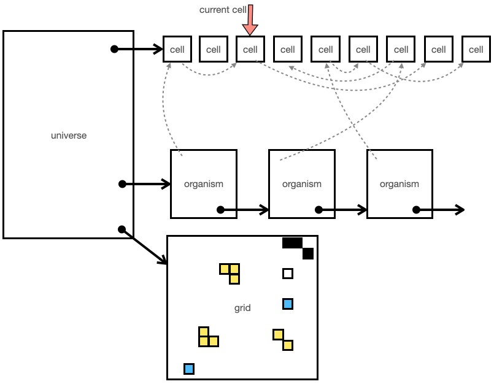

VOLVE 5.0
VOLVE 5.0
Simulation
This page describes how the simulator works.
Table of Contents:
This diagram shows the data structures used to implement the simulation. I consider the Evolve 5.0Universe to be analogous to an operating system. Where Cells are processes and the process table is a two dimensional grid.
Universe
The overall container for the simulation is the UNIVERSE struct. This contains all the information for the simulation. The main data structure is a linked list of cells. This is the task list in an operating system. There is also a linked list of Organisms. Each organism has a linked list of its constituent cells.
The simulation is basically a time-sliced operating system in which each CELL is given 1 exection cycle.
Strains
Each simulation allows for 8 independent strains to be configured. A strain is a set of simulation properties. You can combine several radically different strains to create interesting simulations. One strain could be "plants". One strain could be "bullets", etc... These helper strains can allow you to invent new "physics" for evolution to occur in.
- Mutation Rates: Configure the mutation rates. For example, disable mutations altogether when playing combat modes, or for robot ants which don't evolve.
- Protected Code Blocks: Designate the first N code blocks protected. This code won't mutate, and other cool properties
- Protected Instructions: Mark any of the 160+ instructions as protected. A protected instruction won't be inserted into mutated code, and other cool properties.
- Modes: Most of the important instructions come with mode bits. Each strain can independently configure the behavior of the instructions, such as SPAWN, MAKE-SPORE, EAT.
-
Seed Program: The most powerful way to customize the behavior of a strain is to write a mini operating system
for your organism. By writing an elaborate protected code and traps you can craft a creature with fixed behaviors you control,
and other behaviors you allow evolution to figure out.
Each strain can have its own little sandboxed operating system. Using the SPAWN instruction, an organism from one strain can create a new organism from a different strain.
Organism
All cells must belong to an organism. An organism can consists of one or more cells. The organism belongs to a strain (Strains are limited to 0...7). The ORGANISM struct contains the kforth program which all the cells run.
Cell
The cell is a running program that exists somewhere on the grid. It may or may not have other cells which belong to the same organism. If it does, then they share the same program, but not the same execution context. Cells can communicate in various ways.
Grid
The grid is a pre-allocated data structure for the entire WIDTH x HEIGHT dimension of the universe. The (x,y) location will contain a pointer to the CELL that occupies it. Simple values like odor map values are also stored with each grid location.
UNIVERSE_Simulate()
This is the C API routine which simulates the universe for 1 step. This means a single cell in the cell list is allowed to execute a single instruction. Each time UNIVERSE_Simulate() is called the step variable is incremented.
After all cells in the linked list are simulated, the age variable is incremeneted. And the simulator starts over at the beginning of the list.
Create Your Own Simulation
Evolve 5.0 allows the simulator to be customized. Several features work together to allow this to happen. Such as Protected Code Blocks, Protected Instructions, Strain Profiles, Instruction Mode Flags.
In addition to allowing you, the USER, to create your own simulation, these features also protect simulations from future releases of the Evolve 5.0 software. Any changes to the simulator can be done using Mode Bits, or the creation of new instructions. Existing simulation files will not be affected by such changes.